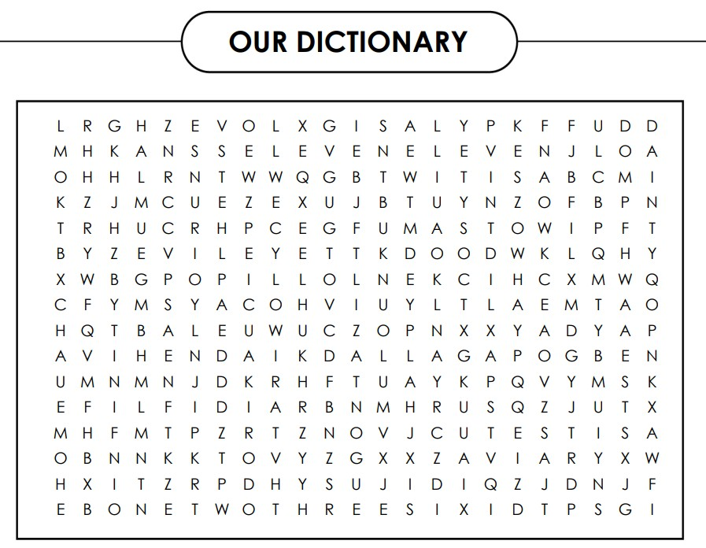

I wanted to start by saying that I am so so proud of you. Every time I hear you say things you want to do, and also the way you think about everyone it makes me wonder how can someone think like this and also with so much kindness. Although tu din mein 10 baar bolti hain ki kaash mein thoda aur smart hoti you’re the smartest person I know (ab toh bolegi sample size chota hain), but you’re like actually very very smart and smart in a very different way that I cannot even explain. You understand things at a much deeper level and you see things which most people don’t. You’re definitely the coolest person I’ve ever met and that has been a constant since the first day we met. Pagal ladki you have this charm and aura that people feel and you’re the kind of person more people should have in their life. I know main nakhre karti hun hain but again I am the best person to tell how much you make life better and obviously more people should have that, so even if mein nakhre karti hun no one should miss on that. You make the world a better place and I know you’ll make it an even better place.
✕
Pagalll Ladki,
I cannot even put in words how much I am gonna miss you. It’s not the place I am gonna miss, it’s you that I am gonna miss. I am trying so hard ki main nahi sochu, but everytime I think it physically pains thinking how much I am gonna miss you. Waking up and seeing you, eating together everyday, random walks, going out, doing everything together, me knowing you’re just one wall away, how I am supposed to give up all of that in a day. I hate it and I hate it more than anything that I would’ve to wait for months to see you and hug you.
Aise toh I am gonna miss you always (bohut hiccups aane wale hain tujhe), but I’ll miss you even more, when:
❤️ I’ll eat
❤️ I’ll have watermelon juice
❤️ I’ll braid my hair
❤️ Bowling karne gayi toh
❤️I’ll bake cinnamon rolls
Aise toh main likhte hi jayungi, but the main point is I am gonna miss you bohut zyada and I’ll call you and text toh bohut karungi and you’re not getting rid of me everrrrr.
Ilyysmmm 🫂❤️♾️

✕Dearest Pagal Ladki, Happiest Birthday meri pyari pagal 🫂❤️. I really really hope you have the best birthday and the best year ahead. I don’t think I can ever properly explain what having you in my life means to me. You make the word best friend meaningful. You’ve been the sole reason I have been happy on campus and I actually survived college and also in general I have been happy most of the days because of you, so thank you for making me a happier person. It’s honestly so weird to think that I had a life before I met you because it honestly feels like I have had you my whole life. I love, love this new you so much. I know nakhre toh maine kafi kiya hain but I genuinely love it. I love how you’re there for everyone, even if tera dimag bhi kharab ho raha hota hain you are still there for others. I am so fascinated by the way you think, like tere bolne ke baad bhi mujhe itna fascinating lagta hain ki how can someone think like this (in the best way obviously). You know there are people who are like the sun and there are people who are like the moon, you are both. You have this instant warmth and your presence even if it is quite is always the most comforting. Like tu room pe sirf baithi bhi hoti hain nah chup chap tu bhi I feel at ease, tu apne room mein bhi hoti hain toh I have this thing in my mind ki side mein hi toh hain and I feel safe. You’ve made me feel the safest I have ever felt in my life. Pagal ladki I am so so proudddd of the person you are and I know you’ll achieve everything you want to do in life and so much more. You deserve the world and everything beyond it. The universe works out for you because you deserve every bit of it. You are the best part of my college life and one of the best of my entire life and I’ll be leaving a very big part of my heart back here. Happy birthday once again pagallll. I love you so so so much. Forever and Always To Infinity and Beyond ♾️🫂❤️🧿 Always Yours, Pagal Ladki
✕